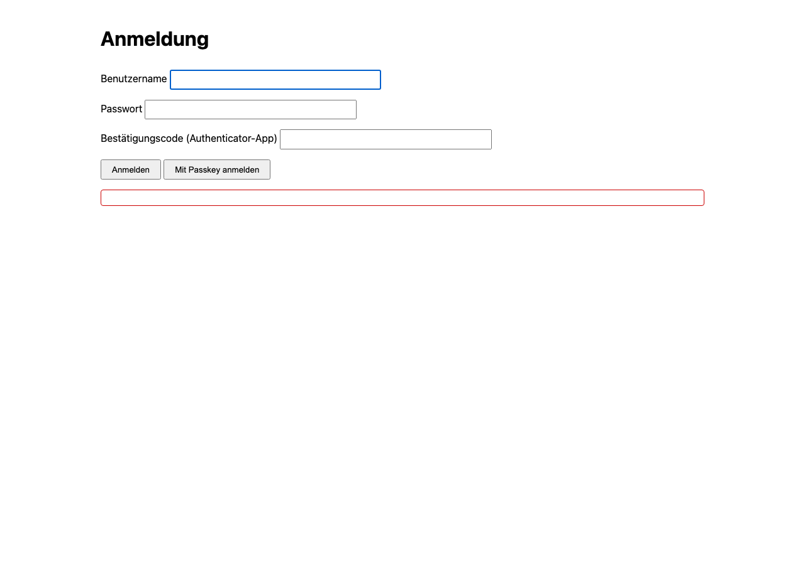

Benutzer anlegen
Es gibt bewusst keinen Registrierungsdialog in der Weboberfläche. Das erste (und jedes weitere) UI-Konto entsteht ausschließlich über die Kommandozeile auf dem Server selbst -- Entscheidung des Projektinhabers vom 2026-09-24. Ein Passkey wird dagegen über die Oberfläche selbst hinzugefügt, mit erneuter Bestätigung durch den bereits angemeldeten Benutzer.
Das Werkzeug: python -m fleet.admin
Auf dem Server, im selben Container oder mit demselben FLEET_DATABASE_URL
wie der laufende Dienst:
python -m fleet.admin create-user alice
Das Passwort wird interaktiv zweimal abgefragt (getpass) -- nie als
Kommandozeilenargument und nie über eine Umgebungsvariable, damit es nicht in der
Shell-Historie oder in Orchestrator-Logs landet. create-user braucht
zusätzlich FLEET_TOTP_KEY, um das neu erzeugte TOTP-Secret verschlüsselt
abzulegen. Nach dem Anlegen zeigt der Befehl den TOTP-Einrichtungscode einmalig an --
in einer Authenticator-App (z. B. Google Authenticator, 1Password, Authy)
hinterlegen, nicht aufschreiben.
Alle Unterbefehle
| Befehl | Wirkung |
|---|---|
create-user <username> | Legt ein neues UI-Konto an, Passwort interaktiv, TOTP-Secret wird erzeugt und mit FLEET_TOTP_KEY verschlüsselt gespeichert. |
reset-totp <username> | Erzeugt ein neues TOTP-Secret für ein bestehendes Konto, z. B. nach Verlust des Zweitgeräts. |
unlock <username> | Hebt eine Kontosperre auf, die nach zu vielen fehlgeschlagenen Anmeldeversuchen entstanden ist. |
delete-user <username> | Löscht ein UI-Konto endgültig. |
rotate-epoch | Dreht die SSE-Resume-Epoche der Datenbank -- einmalig von Hand auszuführen, direkt nach der Wiederherstellung eines älteren Backups, damit kein Agent einen veralteten Last-Event-ID-Stand fortsetzt. |
rotate-totp-key | Schlüsselt jedes Konto von FLEET_TOTP_KEY (alt) auf FLEET_TOTP_KEY_NEW (neu) um. Beide Variablen müssen vor dem Lauf gesetzt sein; danach FLEET_TOTP_KEY auf den neuen Wert setzen und den Dienst neu starten. |
Passkey als zweiten Faktor hinzufügen
Nach der Anmeldung mit Passwort und TOTP kann ein Benutzer in der Oberfläche selbst
einen Passkey (WebAuthn) hinzufügen -- die Zeremonie braucht einen echten Browser und
einen Authenticator, deshalb gibt es dafür kein CLI-Kommando. Voraussetzung sind
korrekt gesetzte FLEET_WEBAUTHN_RP_ID und FLEET_WEBAUTHN_ORIGIN
(siehe Einstieg).

Nächste Schritte
Mit einem Konto angemeldet, geht es weiter mit Wohnung hinzufügen.